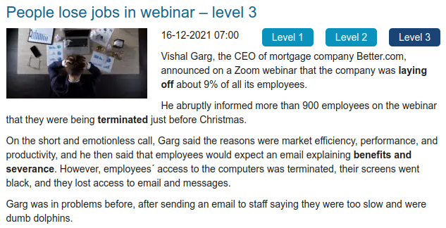

✅ [A1] – Avaliação do Módulo 4 - Estudo contínuo da língua inglesa
Iniciado em terça, 5 set 2023, 19:31
Estado Finalizada
Concluída em terça, 5 set 2023, 20:22
Tempo empregado 51 minutos 10 segundos
Avaliar 7,83 de um máximo de 10,00(78,33%)
Questão 1
Após assistir ao vídeo “Translator for a day”, relacione os tópicos:
Pay attention to body language ..........
Shorten the message ..........
Guide the speech rate ..........
Pay attention to body language... O corpo, os gestos e a expressão facial podem ajudar muito
Shorten the message... Atentar para o fato de que frases mais curtas são mais fáceis de compreender
Guide the speech rate... Dizer de início qual o seu nível de inglês
Questão 2
Assista ao vídeo “Interpersonal Communication Skills” e relacione as perguntas às estratégias apresentadas:
Check understanding by paraphrasing ..........
Ask for repetition ..........
Ask for clarification ..........
Check understanding by paraphrasing... Could you explain what you mean by…? ❌
Ask for repetition... What did you say before/after? ✅
Ask for clarification... Are you saying that…? ❌
Questão 3
No vídeo “Interpersonal Communication Skills”, uma das estratégias apresentadas é chamada de circumlocution. De acordo com o vídeo, quando devemos utilizá-la?
a. Quando esquecemos uma palavra em inglês
b. Quando queremos encerrar a conversa
c. Quando queremos retomar um assunto já falado
d. Quando queremos mudar de assunto
a. Quando esquecemos uma palavra em inglês
Questão 4
No vídeo “Inglês sem mistério (Parte 3)”, a professora apresenta uma ferramenta simples para ajudar não apenas a traduzir mas também a estudar. Que ferramenta é esta?
a. Google Tradutor
b. Lexico (website)
c. RymeZone
d. Memrise
a. Google Tradutor
Questão 5
De acordo com o texto “10 Job Interview Tips” (FERRO, 2012, p. 186), o entrevistado não deve fazer perguntas durante a entrevista.
Escolha uma opção:
Verdadeiro
Falso
Falso
Questão 6
Após a leitura do texto “The global guru” (FERRO, 2012, p. 162-163), responda se a seguinte afirmativa é verdadeira ou falsa:
“Bill Gates criou a Microsoft junto com um amigo de infância chamado Paul Allen.”
Escolha uma opção:
Verdadeiro
Falso
Verdadeiro
Questão 7
No vídeo “Translator for a day”, quais das estratégias abaixo foram utilizadas pela tradutora/intérprete na situação que ela contou? (Marque todas as opções que se aplicam)
Escolha uma ou mais:
a. Manteve uma garrafa d'água próxima, para hidratar-se durante a palestra
b. Fez uma lista de palavras úteis em um cartão e guardou no bolso para alguma necessidade
c. Negociou a interação e o nível de conhecimento linguístico
d. Fez adaptações rápidas, quando possível/necessário
e. Utilizou estratégias de listening
f. Aceitou o desafio como oportunidade
b. Fez uma lista de palavras úteis em um cartão e guardou no bolso para alguma necessidade❌
c. Negociou a interação e o nível de conhecimento linguístico✅
d. Fez adaptações rápidas, quando possível/necessário✅
e. Utilizou estratégias de listening✅
f. Aceitou o desafio como oportunidade✅
Questão 8
Após a leitura do capítulo “Ready for a career move?” (FERRO, 2012, p. 171-189), relacione as palavras e expressões aos seus respectivos significados:
Intern ..........
Manager ..........
CEO ..........
Trainee ..........
Intern... Funcionário em treinamento❌
Manager... Gerente✅
CEO... Diretor Executivo✅
Trainee... Estagiário(geralmente sem vínculo)❌
Questão 9
Leia o texto abaixo e responda se a afirmativa é verdadeira ou falsa.

(Fonte)
Quase 900 funcionários foram demitidos através de uma reunião pelo Zoom, cerca de 9% do total de empregados.
Escolha uma opção:
Verdadeiro
Falso
Verdadeiro ❌
Questão 10
No vídeo “Interpersonal Communication Skills”, uma das dicas que a professora dá é não falar muito rápido.
Escolha uma opção:
Verdadeiro
Falso
Verdadeiro